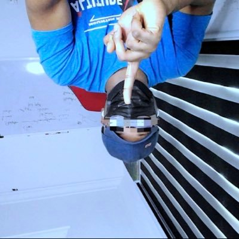

Muhammad-Nabeel
@dtechbro
Home
For you
Following

Name cannot be blank
@hacksultan · 4h
One great company wanted to hire one AltSchool Intern, we gave them 4 interns to interview and they ended up hiring 2 out of the 4...>>>>>>>>>>>
If you're looking for internship, keep looking, as long as you show prospect, some companies are willing to create space for you.
253
120.55k
11.5k
3.1M
Trends for you
Trending in Nigeria
Opay
33.4k Tweets
Trending in sport
Hakimi
512k Tweets
finance
Emefiele
2k tweet
sport